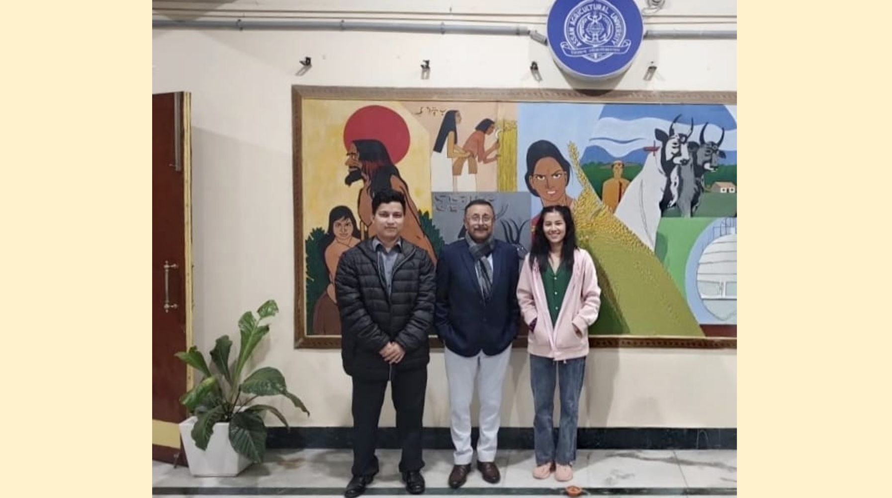

“In the heart of India's tea industry, I learn, research, and innovate to strengthen the future of tea.”
“Growing knowledge, adding value, and shaping the future of tea at Assam Agricultural University.”


TeaTechSeekers Webpage is an academic platform created by Myanmar M.Sc. students studying at Assam Agricultural University from 2024 to 2026. Our mission is to promote tea science through research, innovation, academic collaboration, and knowledge sharing for students, researchers, and tea professionals around the world.
“In the heart of India's tea industry, I learn, research, and innovate to strengthen the future of tea.”
“Growing knowledge, adding value, and shaping the future of tea at Assam Agricultural University.”
We welcome your ideas, suggestions, and feedback to improve TeaTechSeekers. Your valuable comments will help us create a better platform for students, researchers, and tea professionals.